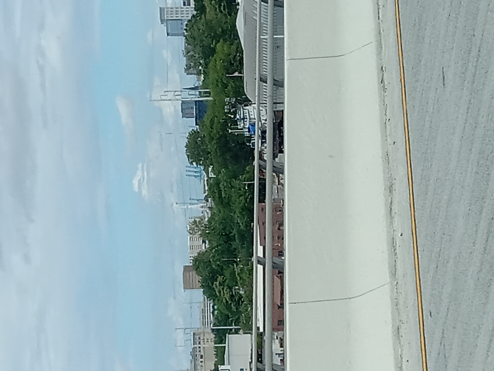

Hampton Roads has beautiful terminals.
This project will exhibit the variety
of locations around Hampton Roads
where you can observe the cranes
that serve as landmarks.
Some of the places that the terminals
can be viewed from may be surprising.
Some of the places that the terminals
can be viewed from are also very far.
On this evening the
Norfolk International Terminal (NIT)
was more illuminated that the
Portsmouth Marine Terminal (PMT).
View from Portsmouth looking up the Elizabeth river.
PMT in foreground, NIT in background on right.
Dark choppy waters near the Hampton Roads
Bridge Tunnel construction lately.
Campostella Bridge
